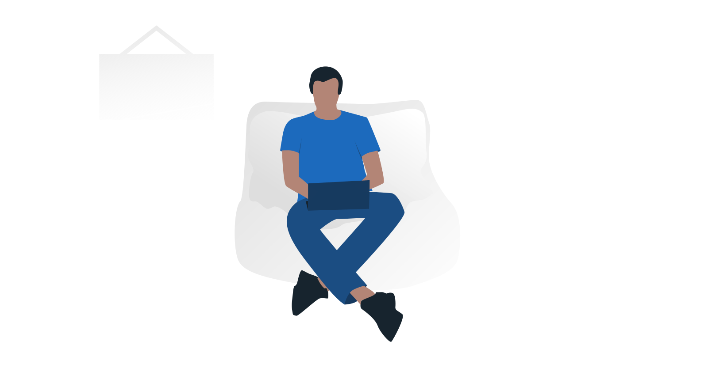

Cover
Vorwort
Unsere Teamidentität wurde wurde mit dem Hintergedanken entwickelt, ein modernes Erscheinungsbild
in allen Dokumenten und Publikationen von uns aufrecht zu erhalten. Weiterhin war es unser Ziel, mithilfe dieses einheitliches Erscheinungsbild
einen Wiedererkennungswert zu schaffen, wodurch eine Zuordnung von unserern Publikationen zu uns deutlich vereinfacht wird
und ein Betrachter nicht verwirrt wird. Um dies sicherstellen zu können, haben wir unsere Teamidentitätsrichtlinien
in einem 13-seitigem PDF-Dokument festgelegt.
Logodesign
Wir haben uns viele Gedanken über unser Logo gemacht, verschiedene Versionen erstellt und unsere Farben zigmal geändert,
bevor wir unser jetziges Logodesign erhielten. Wir wählten blau als unser Farbschema , da blau unter anderem die Farbe unserer Schule ist,
aber auch weil wir blau mit dem Meer, dem Wasser und damit einer maritimen Stadt wie unserer Heimat Bremen verknüpfen. Den Pfeil, der ebenso ein Teil unseres Namens ist,
haben wir so in unser Logo integriert, dass er nach oben zeigt und durch eine schwungvolle Kurve zeigt, dass er Energie in sich hat,
dies symbolisiert die Geschwindigkeit unseres Autos. Den "Racing" Teil unseres Namens haben wir in einer Tagline unter "Blue Arrow" stehen,
da wir einen verstärkten Fokus auf diesen Namensteil legen wollten.
Farbig
Schwarz-weiß
Icondesign
Als unser Icon haben wir den Pfeil aus unserer Wordmark verwendet. Diese Entscheidung traffen wir,
da unser Icon eindeutig zu unserer Wordmark zuzuorden sein sollte und der Pfeil, beziehungsweise das "A" der auffälligste Teil unseres Logos ist.
Wir benötigten diese Variante unseres Logos, für Profilbilder und für Situationen, in denen unsere Wordmark aufgrund von Platzmangel nicht verwendbar wäre.
Typografie
Wie in unseren Teamidentitätsrichtlinien nachzulesen verwenden wir hauptsächlich DeJavue Sans und DeJavue Serif.
Die Version mit Serifen wird aber nur für besonders kleiner oder mit wenig kontrastarmer Schrift verwendet.
Die dickeren Versionen werden für Überschriften und andere wichtige Schrift genutzt. Die ultra-light version wird bei unwichtigeren Text eingesetzt.
Die Schrift wird nur schräggestellt, wenn etwas betont werden soll, oder sich vom restlichen Text unterscheiden soll.
Wir haben uns ffür diese zwei Schriftarten entschieden, da beide frei verwendet werden dürfen und die Sans Version eine modernes,
einfaches, aber trotzdem ansprechendes Erscheinungsbild bietet. für die Serif Version entschieden wir uns,
da diese aufgrund ihrer "Verwandtschaft" mit der Sans Version gut mit dieser zusammenpasst.
Schriftarten
Icons
Wir benutzen Icons für die unterschiedlichsten Zwecke, wie auf unseren Karteikarten oder in unserem Portfolio.
Da wir nicht alle Icons selber gestalten konnten verwenden wir das Iconset "jam-icons" V2. Allerdings haben wir auch eigene Icons kreirt,
da dieses Iconpack nicht alle für uns nötigen Icons enthielt. Dieses Iconpack ist unter der MIT-Lizens lizensiert und damit für uns problemlos nutzbar.
Wir haben uns für dieses Iconset entschieden, da uns der Stil gefiel und zwei unterschiedliche Versionen,
eine ausgefüllte und eine aus Umrisse bestehende Version zur Verfügung besteht.
Icons
Farben
Wie oben schon erwähnt ist blau unsere Teamfarbe. Diese Farbe findet man vorallem un unserem Logo. Wir haben zwei Variationen unseres Blaus, die wir auch verwenden,
eine dunkle, hauptsächlich für Text, und eine helle, hauptsächlich um Hintergründe voneinander abheben zu können. Auch haben wir zwei Grauvariationen,
sowie weiß und schwarz als Teamfarben um starke kontraste Erzeugen zu können, schwarz-weiß;-Druck einfacher verwebden können.
Die Grauvariationen verwenden wir hauptsächlich für ein neutrales Auftreten, also für Elementem die keine Aufmerksamkeit auf sich ziehen sollen.
Wir haben auch einen Grün-, einen Gelb- und einen Rotton in unserer Farbpalette. Diese können in den unterschiedlichsten Situationen eingesetzt werden.
Weiterhin haben wir von allen unseren Farben einige weitere Variationen. Diese brauchen wir für Illustrationen.

Blauvariationen
Grauvariationen
Grünvariationen
Gelbvariationen
Rotvariationen